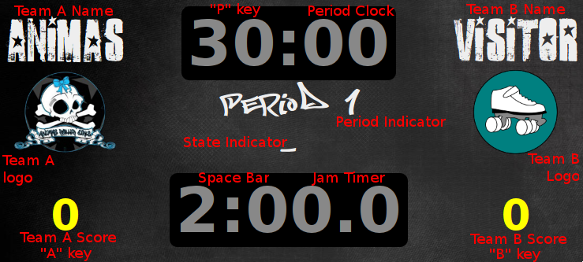

Using the LADD Roller Derby Scoreboard

Setup
-
When the state indicator reads "Setup", you can click on almost
anything to change it.
-
Set the logo before you change the team name.
-
If your team's logo and name isn't in the list,
please mail them to me
and I will add them.
-
Reload the page (click "Reload" or type F5) to get back to setup
mode. Scores, timeouts, and period clock time are all saved.
-
Type Space Bar or click the jam clock to begin the first jam.
Running Jams
-
Press Space Bar or click the jam clock to switch between 2:00
jams and 0:30 rotations.
-
Type "A" or "B" to add points to a team's score. You can also
click a score to add a point.
-
Type "Shift+A" or "Shift+B" to remove points from a team's
score. You can also click a team logo to remove a point.
Timeouts
-
Type "T" or click the period clock to enter into a timeout.
-
Click a team's timeout count to remove one from it. If it's at
0, click it to reset it to 3.
-
Click the period clock during a timeout to change the time left
in the period.
-
Type Space Bar or click the jam clock to exit timeout mode and
start the next jam.
Periods
-
Go into Timeout mode to re-set the period clock to 30:00. Click
it to change it to a different time.
-
Click the period indicator to cycle between "Period 1", "Break",
and "Period 2".
Other cases
- Halftime / Double-header break
-
- Type "T" to enter timeout mode.
- Click the period indicator until it says "Break"
- Click the period clock.
- Enter the duration of halftime.
- Type Space Bar to start counting down.
- It's okay to let the jam clock reach 0:00.
- 20-minute periods
-
- During setup or timeout, click the period clock.
- Enter "20:00" for the new time.
- Click the period indicator until it displays the
appropriate period
If the browser exits
Shit happens. So every second, the scoreboard saves its state to the
browser's long-term storage using the
HTML5 localStorage object. The following information
is stored, and will come back the way it was when the browser exited:
- Period clock time
- Team names
- Team logo URLs
- Team scores
It is a good idea to verify that your browser actually stores this
information around before you run a bout, by starting a pretend
jam, exiting, then re-opening.
Customizing the display
The scoreboard is written in HTML5, CSS, and JavaScript. If you'd
like to try your hand at graphic design, feel encouraged to do
so. Just remember to keep the onclick
and id attributes in elements that have them, and
everything should continue to work.
If you come up with a new design, or code improvements, I'd love
to see it!
If you have problems
If something goes wrong, please email me (link below) with as much
detail as you can remember, and I'll try to fix it for you and
everybody else. For example:
I clicked the period timer during a timeout and the Team A logo
turned into a photo of a burrito.
Enjoy!
Neale Pickett <neale@woozle.org>